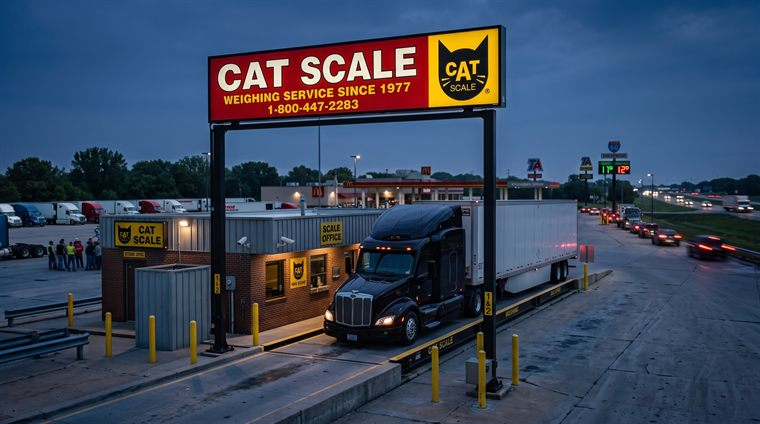

Your truck
Pre-trip, weights and the trailer3On the road
Conditions, scales and paperwork5Live map · External
Road Conditions & Traffic
Live weather, traffic, accidents and construction across the country — opens the 511 map.
Open map ↗
By state
State DOT / 511 Maps
Official live road, weather and traffic map for every state — tap your state.

Locator · ExternalCAT Scale Locator
Find the nearest CAT Scale to weigh your load.
Locator · ExternalTransflo TripPak Locations
Truckstop scanning and drop-box shipping — find the nearest place to send your paperwork in.
WinterWinter Chain Law
When chains are required, how many to carry (our 2-per-bag setup), and the 15 states that enforce it.
Dispatch & compliance
Routing, tolls and enforcement dates3Nothing matches that
Try “PTI”, “weight”, “chain”, “scale”, “Transflo” or “bridge”.
Need another playbook?
Customer delivery protocol, reefer temperature log, a corridor SOP — ask your dispatcher or safety admin to add it here.